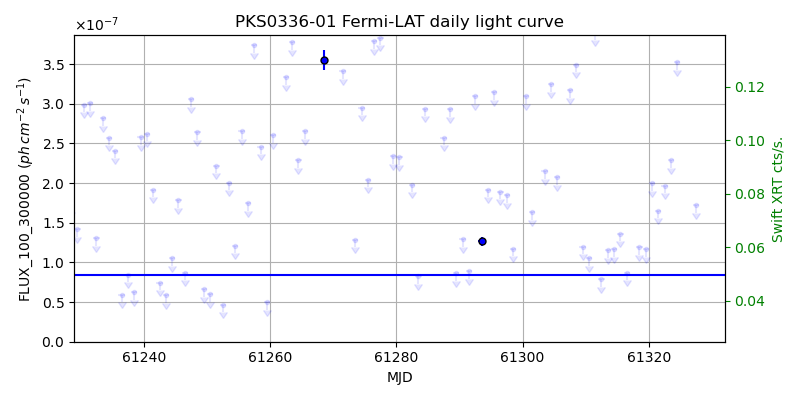
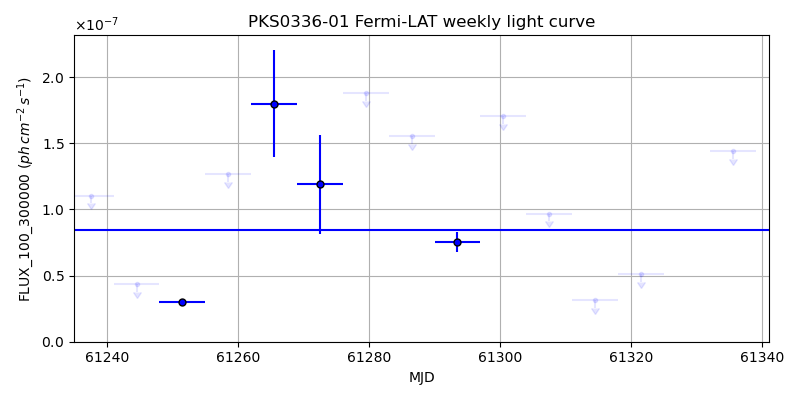
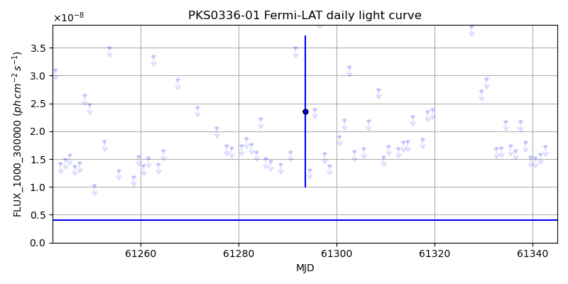
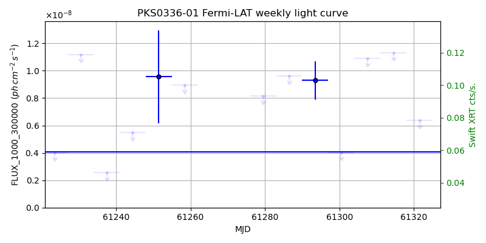

LAT Lightcurve site: https://fermi.gsfc.nasa.gov/ssc/data/access/lat/msl_lc/source/PKS_0336-01
Swift site: https://www.swift.psu.edu/monitoring/source.php?source=0336-019
NED: Query
Time of last update of this page: UT: 2026-10-24 15:14 (MJD: 61337.635)
| Property | Value |
|---|---|
| R.A. | 3:39:30.96 |
| Dec. | -1:46:37.2 |
| z | 0.852 |
| 3FGL SpectrumType | LogParabola |
| 3FGL PL Index | |
| 3FGL Flux_100_300000 | 8.42e-08 1 / (s cm2) |
| 3FGL Flux_1000_300000 | 4.08e-09 1 / (s cm2) |
| 3FGL Flux >200 GeV | 6.19e-13 1 / (s cm2) |
| 3FGL Extrap. Crab >200 GeV | 0.00 |
| 3FGL Flux After EBL Absorption >200GeV | 2.37e-14 1 / (s cm2) |
| 3FGL EBL Crab Fraction >200GeV | 0.00 |

| MJD | dMJD | Flux | dFlux | Frac3FGL | FracCrab>200GeV | EBLFracCrab>200GeV |
|---|---|---|---|---|---|---|
| 61332.50 | 0.50 | 3.91e-07 | 0.00e+00 | 0.00 | 0.00 | 0.00 |
| 61333.50 | 0.50 | 2.30e-07 | 0.00e+00 | 0.00 | 0.00 | 0.00 |
| 61334.50 | 0.50 | 1.16e-07 | 0.00e+00 | 0.00 | 0.00 | 0.00 |
| 61335.50 | 0.50 | 5.32e-07 | 0.00e+00 | 0.00 | 0.00 | 0.00 |
| 61336.50 | 0.50 | 2.96e-07 | 0.00e+00 | 0.00 | 0.00 | 0.00 |

| MJD | dMJD | Flux | dFlux | Frac3FGL | FracCrab>200GeV | EBLFracCrab>200GeV |
|---|---|---|---|---|---|---|
| 61300.50 | 3.50 | 1.71e-07 | 0.00e+00 | 0.00 | 0.00 | 0.00 |
| 61307.50 | 3.50 | 9.68e-08 | 0.00e+00 | 0.00 | 0.00 | 0.00 |
| 61314.50 | 3.50 | 3.14e-08 | 0.00e+00 | 0.00 | 0.00 | 0.00 |
| 61321.50 | 3.50 | 5.11e-08 | 0.00e+00 | 0.00 | 0.00 | 0.00 |
| 61328.50 | 3.50 | 3.75e-07 | 0.00e+00 | 0.00 | 0.00 | 0.00 |

| MJD | dMJD | Flux | dFlux | Frac3FGL | FracCrab>200GeV | EBLFracCrab>200GeV |
|---|---|---|---|---|---|---|
| 61332.50 | 0.50 | 1.69e-08 | 0.00e+00 | 0.00 | 0.00 | 0.00 |
| 61333.50 | 0.50 | 1.71e-08 | 0.00e+00 | 0.00 | 0.00 | 0.00 |
| 61334.50 | 0.50 | 2.18e-08 | 0.00e+00 | 0.00 | 0.00 | 0.00 |
| 61335.50 | 0.50 | 1.74e-08 | 0.00e+00 | 0.00 | 0.00 | 0.00 |
| 61336.50 | 0.50 | 1.66e-08 | 0.00e+00 | 0.00 | 0.00 | 0.00 |

| MJD | dMJD | Flux | dFlux | Frac3FGL | FracCrab>200GeV | EBLFracCrab>200GeV |
|---|---|---|---|---|---|---|
| 61300.50 | 3.50 | 4.04e-09 | 0.00e+00 | 0.00 | 0.00 | 0.00 |
| 61307.50 | 3.50 | 1.09e-08 | 0.00e+00 | 0.00 | 0.00 | 0.00 |
| 61314.50 | 3.50 | 1.13e-08 | 0.00e+00 | 0.00 | 0.00 | 0.00 |
| 61321.50 | 3.50 | 6.38e-09 | 0.00e+00 | 0.00 | 0.00 | 0.00 |
| 61328.50 | 3.50 | 1.48e-08 | 0.00e+00 | 0.00 | 0.00 | 0.00 |
--------------------------------------------------------- Using user-supplied coords: 3:39:30.96 -1:46:37.2 2000 --------------------------------------------------------- FLWO UT night of: 2026-10-25 Local Sid. @ Midnight: 01:50 Sunset (-15.0) (local, UT): 18:49 01:49 Sunrise (-15.0) (local, UT): 05:27 12:27 Moonrise (local, UT): Moonset (local, UT): Moon phase: 0.99 --------------------------------------------------------- AzTime LSID UT Obj_el Obj_az Mn_el Mn_az Sep. --------------------------------------------------------- 18:49 20:39 01:49 -14.0 83.2 26.2 94.5 41.6 19:19 21:09 02:19 -7.6 87.3 32.4 98.6 41.4 19:49 21:39 02:49 -0.5 91.2 38.6 103.2 41.3 20:19 22:09 03:19 5.4 95.2 44.7 108.4 41.1 20:49 22:39 03:49 11.6 99.3 50.6 114.6 41.0 21:19 23:09 04:19 17.9 103.6 56.2 122.3 40.8 21:49 23:39 04:49 24.0 108.2 61.2 132.2 40.7 22:19 00:09 05:19 30.0 113.3 65.5 145.3 40.6 22:49 00:39 05:49 35.7 119.1 68.4 162.2 40.5 23:19 01:10 06:19 41.1 125.8 69.4 182.2 40.4 23:49 01:40 06:49 46.1 133.6 68.2 202.0 40.2 00:19 02:10 07:19 50.3 142.9 65.1 218.6 40.1 00:49 02:40 07:49 53.7 153.8 60.8 231.3 40.0 01:19 03:10 08:19 55.9 166.3 55.7 240.9 39.9 01:49 03:40 08:49 56.6 179.8 50.1 248.5 39.7 02:19 04:10 09:19 55.9 193.3 44.3 254.6 39.6 02:49 04:40 09:49 53.8 205.8 38.2 259.8 39.4 03:19 05:10 10:19 50.4 216.8 32.1 264.4 39.3 03:49 05:40 10:49 46.2 226.1 26.0 268.5 39.1 04:19 06:10 11:19 41.3 234.0 19.9 272.4 38.9 04:49 06:40 11:49 35.9 240.7 13.8 276.2 38.7 05:19 07:11 12:19 30.2 246.5 7.8 279.9 38.5 05:27 07:18 12:27 28.6 247.9 6.2 280.9 38.5 --------------------------------------------------------- Moon up all night, no dark time. Dark hours >55 deg.: 0.00